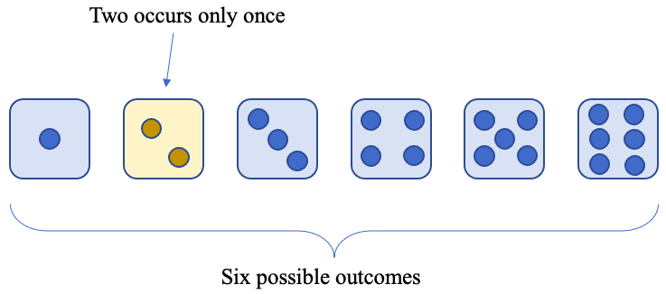
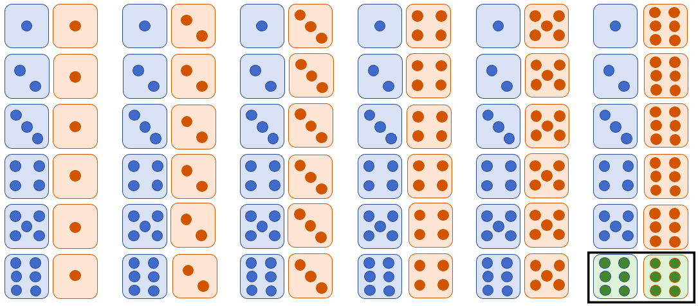
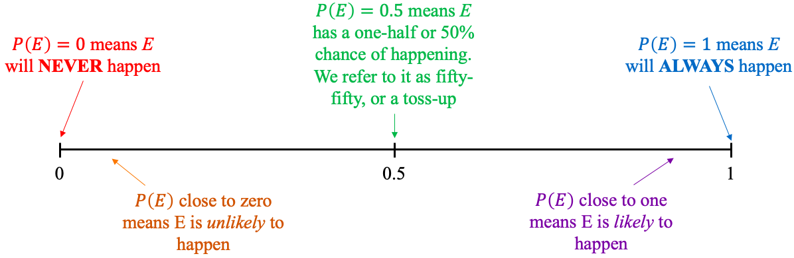
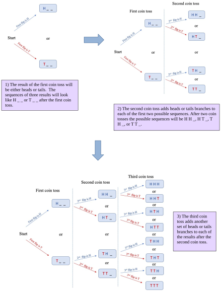
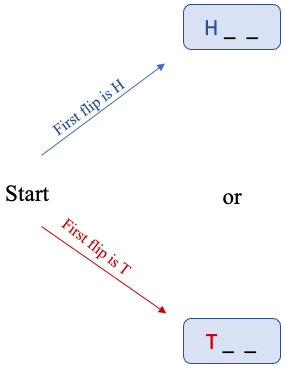
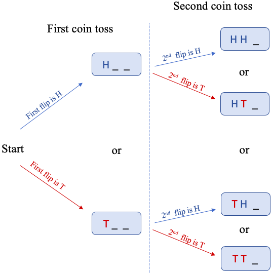
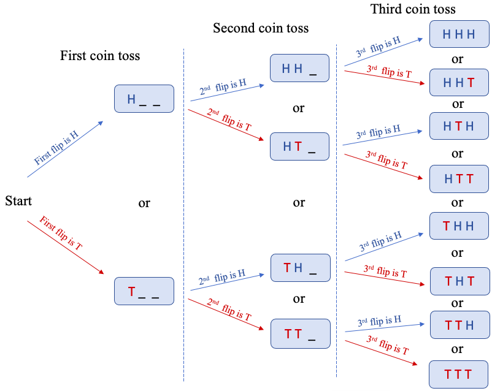
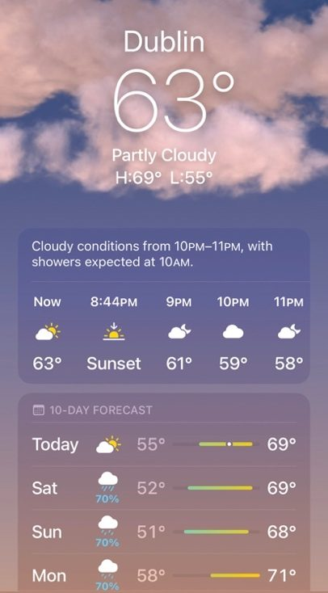
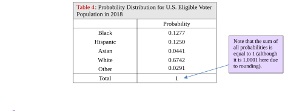
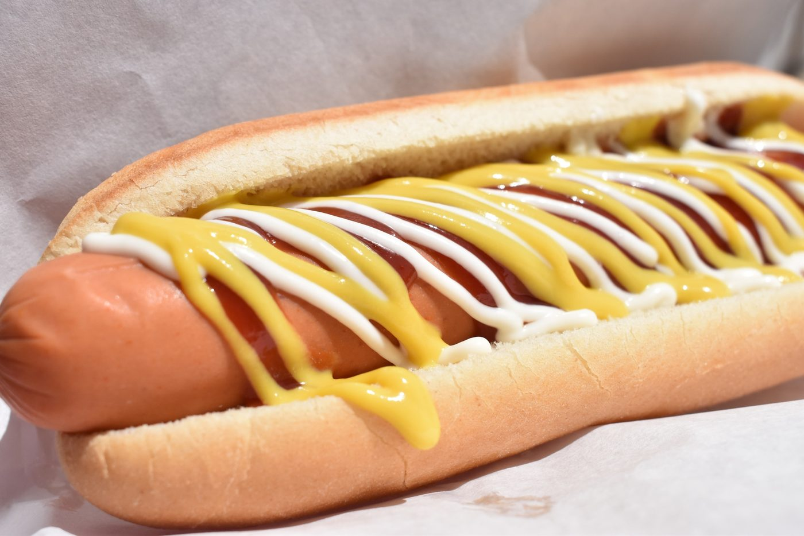

Section 5.1: Basic Probability
Learning Objectives
1.Distinguish between the three methods of finding probability.
2.Calculate and interpret theoretical probability.
3.Calculate and interpret empirical probability.
4.Recognize and interpret subjective probability.
5.Create and use a probability distribution from frequency table data.
Probability forms the basis of inferential statistics. But what is probability? Most of us have some sense of it from flipping a coin or from weather reports giving the chance of rain. We intuitively know that a coin flip has a 50% chance of coming up tails. We understand that a 90% chance of rain means that rain is likely, but how will that help us to make inferences from data? First, we need some definitions.
Definition 1
Probability is a numerical measurement for the likelihood of an occurrence or outcome, called an event. Usually, we use capital letters to denote events, and the letter P to represent probability. The probability that event E will happen is denoted
There are three approaches we can take to establish the likelihood of an event. Here is an overview.
1. Theoretical (or classical) probability:
If the outcomes of an event are equally likely, we can make a list of all the possible outcomes. This is called a sample space, and we can calculate the proportion of times the desired event will occur theoretically. But this approach can only be used when you can create a sample space of equally likely outcomes! Sadly, this is not the case when we study social issues. But it is useful for studying games like poker, dice, or roulette.
2. Empirical (or experimental) probability:
Empirical probability is another name for the relative frequency we worked with in chapter 2. We can repeat an experiment many times and calculate the proportion of times the event occurs or find the relative frequency from collected data. We would use this to estimate the chances of being involved in car crash, catching Covid-19, or graduating high school. It would not be possible to establish these probabilities theoretically because it is impossible to write out a list of equally likely outcomes.
3. Subjective probability:
Subjective probability is making an informed guess in situations when you cannot repeat an experiment, and you cannot create a sample space of equally likely outcomes. For example, the probability that it will rain cannot be computed either of the first two ways, so we create computer models that effectively help us make very good guesses as to the chance of rain. But it is still a guess.
Next, we will take a closer look at each type of probability.
Theoretical Probability
To use theoretical probability, we need to create a list of all possible outcomes of the activity, or experiment. Additionally, each outcome must have the same chance of occurring, like flipping a coin, rolling dice, or randomly selecting a card from a deck. The probability that the event will happen is then calculated as the number of ways the event can occur, divided by the total number of possible outcomes.
Definition 2 Theoretical Probability
A probability experiment is any activity where the outcome is uncertain. A sample space is a list of all possible equally likely outcomes of a probability experiment. An event is one possible outcome or a combination of several outcomes. If E denotes the event, then the theoretical probability that E will occur is
Example 1: Rolling a die
Find the probability of rolling a six-sided die and getting a two.
Solution:When you roll a fair six-sided die, all the outcomes are equally likely. That means each face numbered one through six has an equal chance of showing up. So, the sample space is a list of all the equally likely outcomes, in this case {1, 2, 3, 4, 5, 6}. A diagram of the sample space is in figure 5.2.

Figure 5.2: Illustration of the sample space for rolling a single six-sided die.
The probability of rolling a two is found by observing the number of times “two” occurs in the sample space, which is only one time. There are a total of 6 possible outcomes.
So, the probability of rolling a two is .
Example 2: Rolling two dice
Find the probability of rolling two six-sided dice and getting
a)double sixes.
b)the sum of the two faces is equal to 8.
c)the sum of the two faces is equal to 1.
d)the sum of the two faces is at least 2.
Solution:Again, since dice have equally likely outcomes, we can create a sample space and find the answer using theoretical probability. For clarity, let’s assume that one die is blue and the other is red. Each possible outcome of rolling the two dice is the number showing on the blue die, and the number showing on the red die. Figure 5.3 shows all 36 possible outcomes of rolling two dice.

Figure 5.3: Illustration of the sample space for rolling two six-sided dice.
It is important to note that rolling a six on the blue die and a two on the red die is not the same as rolling a two on the blue die and a six on the red die. Since the numbers on the dice are switched, they are different outcomes, even though they are both a six and a two.
a)To calculate the probability of rolling double sixes, note that there is only one way to do that listed in the sample space, highlighted in figure 5.4.

Figure 5.4: There is only one outcome that is double sixes.
So, the probability of rolling double sixes is
b)To calculate the probability that the sum is 8, we find the number of ways the sum of 8 occurs in the sample space and divide it by the total number of outcomes. There are 5 ways to get a sum equal to 8, highlighted in figure 5.5.

Figure 5.5: The ways rolling two six-sided dice gives a sum equal to 8.
Thus, the probability that the sum is 8 is
We can express the probability as a percent and say that rolling two six-sided dice will result in a sum equal to 8 about 13.89% of the time.
c)There are no sums of two dice that equal to 1. All the sums are at least 2. So, rolling a sum that is equal to 1 is impossible and will never happen. The probability of getting a sum equal to 1 is then calculated as zero out of thirty-six, or
We interpret this probability as saying the probability is zero, or there is a zero-percent chance it will happen.
d)Since every sum is at least two, getting a sum that is at least two will happen every time. That is, it will happen 36 out of 36 times, so the probability is
Here, saying that the probability equals 1 is equivalent to saying that there is a 100% chance it will happen.

Important Point!
Probability is always between 0 and 1, including 0 and 1. A probability equal to 0 means an event is impossible, and it will never happen. A probability equal to 1 is a certainty, and it will always happen! See figure 5.6.

Figure 5.6: The range of probability.
Example 3: Flipping a coin three times
Assume you plan to flip a coin three times. Further, assume that the result of each coin toss will be heads or tails, and they are equally likely. Let H represent heads and T represent tails.
a)Describe the sample space.
b)What is the probability of getting tails exactly twice?
c)What is the probability of getting tails at least once?
Solution:a)Since each outcome of each coin toss is equally likely, we can use a sample space to answer the question. The easiest way to organize the possible sequences is to use a tree diagram.




Figure 5.7: Tree diagram for sequence of three coin-flips.
See figure 5.7 for the completed “tree diagram” after three coin-tosses. Tree diagrams are helpful when you need to keep track of sequences of outcomes.
From the tree diagram, we can see that there will be 8 different sequences of three coin flips that are possible. The sample space is S = {HHH, HHT, HTH, HTT, THH, THT, TTH, TTT}.
b)Exactly twice means that there will be two tails and one head in the sequence. Looking at the sample space, we can see that there are three outcomes with exactly two tails, HTT, THT, and TTH.
{HHH, HHT, HTH, HTT, THH, THT, TTH, TTT}
So, the probability of getting exactly two tails is
c)Getting tails at least once means that there is at minimum one tail in the sequence. The only outcome without any tails is the first one, HHH. That means that 7 out of the 8 outcomes have at least one tail.
{HHH, HHT, HTH, HTT, THH, THT, TTH, TTT}
So, the probability is
Empirical Probability
Unfortunately, it is not always possible to describe a sample space because there are many occurrences that do not have equally likely outcomes. For example, the probability that a person of color is a homeowner cannot be calculated by creating a sample space because owning a home and not owning a home are not equally likely. If we want to find the probability of this, we must use data to find the relative frequency that a person of color is a homeowner. The new, fancier name for using relative frequency, is called using empirical probability.
Definition 3 Empirical Probability
Empirical probability is found using observations from experimentation or collected data. If E represents an event, then the probability that E occurs is estimated by the number of times E occurred in the data, divided by the total number of observations.
Example 4: An Empirical Probability
The frequency table given in Table 1 is from a student survey regarding tattoos. Estimate the probability that a randomly selected student has no tattoo.
Table 1: Summarized Tattoo Data | |
|---|---|
What best describes you? | Frequency |
I have no tattoos | 59 |
I have one tattoo | 13 |
I have more than one tattoo | 35 |
I have had tattoos removed | 5 |
Solution:Having no tattoo, one tattoo, or more tattoos are not equally likely events, so we can’t use the theoretical approach. Our only choice is to use the empirical approach to estimate the probability of having no tattoo using the data. From the frequency table we can see that the number of people surveyed with no tattoo is 59. The empirical probability of having no tattoo will be this number divided by the total number of people surveyed.
The total is not given, so we will add the frequencies from the table to find it. The total is 59 + 13 + 35 + 5 = 112. So, the empirical probability is calculated as
Usually, we round probability to three or four decimal places. Here, we would write the probability that a randomly selected student has no tattoo is approximately 0.527. We could also express it in a percent form as a 52.7% chance that a student has no tattoo.
 Tip!
Tip!Finding empirical probability is the same as finding relative frequency (in chapter 2). To compute relative frequency, just divide the frequency of the event in the data by the total number of observations.
When we compute empirical probability, we are using data to make the estimate. So, we need to make sure that the data was collected without bias, and we need to collect enough data to deem the results accurate and reliable. For example, if you ask three friends if they have a tattoo, you have a very small sample! Small samples may not be diverse enough to reflect the population. If you collected data from 2,500 people, you can be more confident in the probability you calculate. This is known as the law of large numbers.
The Law of Large Numbers
The Law of Large Numbers says that as the amount of data increases, the empirical probability will move closer to the theoretical probability. Sometimes the only way to establish a probability is to use large amounts of data and make an estimate. The more data you use, the closer the estimate should be to the actual probability, and the more reliable the estimate should be.
To illustrate the Law of Large Numbers, we simulated flipping a coin one-thousand times and graphed the results with STATBELT Utility- the Statistical Basics Exploratory Learning Tool (opens in a new tab). See figure 5.8.
![Figure 5.8: Coin flip simulation. STATBELT Utility scatterplot of the empirical probability of heads against flip number for the first 350 flips. The points jump around at first and then settle toward the horizontal line at 0.5. Highlighted points: after 1 flip the estimated probability of heads is 0; after 2 flips it is 0.5; after 57 flips it is 0.6316; after 300 flips it is 0.5167. A note says that as the coin is flipped more and more times, the empirical probability of getting heads gets closer to the theoretical probability of getting heads (the horizontal line at 0.5).](images/tk_fig5_8.png)
Figure 5.8: Coin flip simulation.
We know that theoretically, the probability of getting Heads is 1/2 = 0.5. We updated the empirical probability after each coin flip and plotted the probabilities in the chart (only up to 350 flips). At first, with fewer coin flips, the probability jumped around. It got as high as 0.6316 after 57 coin-flips, then dropped back down toward 0.5. As you can see, as the number of flips increased, the empirical probability got closer to 0.5.
You can also see the gradual trend toward the theoretical probability by looking at Table 2. After 1 flip, the empirical probability is 0. After 2 flips, it is 0.5. The table includes up to 1000 flips when the empirical probability was calculated to be 0.506.
Photo by Riho Kroll (opens in a new tab) on Unsplash (opens in a new tab)
Table 2: Coin Flip Simulation | ||
|---|---|---|
Number of coin flips | Number of Heads | Empirical Probability of getting Heads |
1 | 0 | 0 |
2 | 1 | 0.5 |
3 | 2 | 0.6667 |
57 | 36 | 0.6316 |
300 | 155 | 0.5167 |
1000 | 506 | 0.506 |
So, if you can’t find probability theoretically, you can estimate it by collecting data. But you may need a lot of data!
Example 5: An Empirical Probability
Pew Research Center conducted a Race in America survey in 2019. One question in the survey asked if subjects had been unfairly stopped by police. The responses included 668 Black individuals who responded “Yes, it has happened to me,” and 802 Black individuals who responded “No, it has not happened to me.” What is the estimated probability that a Black American has been unfairly stopped by police?
Solution:The two outcomes, whether someone has or has not been unfairly stopped by police are not equally likely. For that reason, we can’t compute this probability theoretically. Instead, we use the data to estimate the probability using the empirical method. Fortunately, it appears there is a large amount of data, so the estimate should be reasonable.
The number of Black Americans who responded “yes” is 668. It is tempting to divide 668 by 802, but 802 was the number who responded “no,” not the total. The total number of Black Americans in the survey was the number who replied “yes” plus the number who replied “no” (there were 48 nonresponses, but we will ignore them for this question). That gives us a total of 668 + 802 = 1,470.
So, the probability that a Black American feels they have been unfairly stopped by police is approximately .
Important Point!
Probability can be interpreted and expressed in two different ways. The statement can be interpreted as:
1) There is a p% chance that the event E will happen given one opportunity.
2) When given repeated opportunities, the event will happen about p% of the time, overall.
In the last example, the probability that a Black American felt they had been unfairly stopped by police was 0.4544. The two interpretations are:
1)There is a 45.44% chance that one randomly selected Black American feels they have been unfairly stopped by police.
2)About 45.44% of all Black Americans feel they have been unfairly stopped by police.
Example 6: Interpreting Probability
If E represents the event that a randomly selected U.S. household subscribes to a cable TV service, then (based on cable industry statistics). Interpret this probability two ways.
Solution:1)The probability that a given U.S. household subscribes to a cable TV service is 0.44. You can also say there is a 44% chance that one randomly selected U.S. household will be a cable subscriber.
2)Overall, about 44% of U.S. households subscribe to a cable TV service.
Subjective Probability
In situations when we can’t create a sample space, and we can’t run an experiment or collect data, our only option is to make an informed guess as to the likelihood of an event. Of course, any guess we make will be subjective, and hence we call this approach finding a subjective probability. For example, you can’t calculate the probability of a sports team winning a specific game using either the classical or empirical approach. Winning and not winning are not equally likely, so you can’t find it theoretically. Neither can you collect data on how often the team wins the game by playing that specific game over and over to see how often they win it (each repeat would be a new game, played with different factors such as the condition of the players on each team, not the “same game”). The only option is to use subjective assessment of their chances. Even if you use computer simulations, the result is still based on the information the simulations use, which makes it subjective. Sadly, there is no formula for finding subjective probability.
Example 7: A Subjective Probability
If E represents the event that it will rain in Dublin, Ireland, on Saturday, estimate . See figure 5.9.

Figure 5.9: The Weather in Dublin, Ireland.
Solution:According to the weather app on my phone, there is a 70% chance that it will rain on Saturday. Once again, this is subjective because it is not based on data collected by repeating Saturday over and over to see how often it rained, nor is it from a sample space. It is subjective! Another weather service might think there is a 60% chance of rain at the same time and at the same location. There is no way to know for certain until Saturday arrives. (But it is Ireland, so you should just assume it is going to rain.)
Properties of Probability
Now that we have looked at the three approaches to calculating probability, we will turn our attention to some of the properties of probability.
Definition 4 Probability Distribution
A probability distribution (or probability model) is a list of each possible outcome of an experiment (or category of data) along with its probability. Probability models are constructed the same way we created relative frequency tables in chapter 2.
Example 8: A Probability Distribution
Pew Research Center estimated the number of eligible U.S. voters from some racial or ethnic groups in 2018. The qualitative data is summarized in Table 3.
a)What is the probability that a randomly selected eligible voter is Hispanic?
b)Make a probability distribution from the data.
Table 3: U.S. Eligible Voter Population in 2018 | |
|---|---|
Number of eligible voters | |
Black | 29,831,000 |
Hispanic | 29,210,000 |
Asian | 10,302,000 |
White | 157,538,000 |
Other | 6,793,000 |
Total | 233,674,000 |
Photo by Element5 Digital (opens in a new tab) on Unsplash (opens in a new tab)
Solution:a)We must use empirical probability to estimate this probability. The number of eligible Hispanic voters is 29,210,000. The total number of eligible voters is 233,674,000. So, the probability that an eligible voter is Hispanic is
This is simply the relative frequency of eligible Hispanic voters.
b)To make the probability distribution, we find the relative frequency for each group. We have already computed the probability that an eligible voter is Hispanic.
Putting all the information into a table, we have the probability distribution, given in Table 4.

Table 4: Probability Distribution for U.S. Eligible Voter Population in 2018 | |
|---|---|
Probability | |
Black | 0.1277 |
Hispanic | 0.1250 |
Asian | 0.0441 |
White | 0.6742 |
Other | 0.0291 |
Total | 1 |
Important Point!
Like the sum of relative frequencies, the sum of all probabilities in a probability distribution must be 1 (or 100% if you use percentages).
Definition 5 Rare or Unusual Event Rule
We will consider an event to be rare, or unusual, if it has a probability less than 0.05. In other words, an event is rare or unusual if it has less than a 5% chance of occurring. But rare or unusual events are NOT impossible!
Example 9: A Probability Distribution
A study of 228 college graduates collected data on their grade point averages. The summary data is given in Table 5.
a)Make a probability distribution from the data.
b)What is the probability that a randomly selected college graduate had a GPA below 2.0?
c)Graduating “cum laude” means that the student graduated with a GPA of at least 3.5. What is the probability that a randomly selected college student graduated with this honor?
d)Which of the preceding probabilities reflects a rare or unusual event?
Table 5: College Grade Point Average | |
|---|---|
GPA | Frequency |
1.5 to 1.99 | 3 |
2.0 to 2.49 | 20 |
2.5 to 2.99 | 58 |
3.0 to 3.49 | 82 |
3.5 to 3.99 | 55 |
4.0 to 4.49 | 10 |
Total | 228 |
Photo by Logan Isbell (opens in a new tab) on Unsplash (opens in a new tab)
Solution:a)First, we must find the relative frequency for each class.
Putting these into Table 6 we have a probability distribution for college grade point averages.
Table 6: College Grade Point Average | |
|---|---|
GPA | Probability |
1.5 to 1.99 | 0.0132 |
2.0 to 2.49 | 0.0877 |
2.5 to 2.99 | 0.2544 |
3.0 to 3.49 | 0.3596 |
3.5 to 3.99 | 0.2412 |
4.0 to 4.49 | 0.0439 |
Total | 1 |
b)Below 2.0 means the GPA is in the 1.5 to 1.99 category. So,
We can say that the probability that one college graduate had a GPA below 2.0 is 0.0132. Or, we can say that about 1.32% of all college graduates have a GPA below 2.0.
c)The group of students graduating with a GPA of at least 3.5 includes all students with a 3.5 to 3.99 GPA and students with a 4.0 to 4.49 GPA. So, we must combine the two groups to get
Note that we could also have simply added the probabilities for the two classes from the distribution together.
(We will look at this sort of feature of probability more in section 5.2.)
We can say that the probability that a college student graduated with the cum laude honor is 0.2851. Or, we can say that about 28.51% of all college graduates receive this honor.
d)The probability that a college graduate graduated with a grade point average less than 2.0 was only 0.0132. That is less than 0.05 and is therefore a rare or unusual event.
Graduating cum laude had a probability that was 0.2851, which is larger than 0.05, and so graduating with this honor is not rare or unusual.
Summary of Important Probability Properties
1.Whether computing probability theoretically or empirically, it is always calculated by dividing the number of times an event occurs by a larger total.
2.The probability of any event is between 0 and 1, including 0 and 1.
3.The probability of an impossible event is 0.
4.The probability of a certain event is 1.
5.The sum of all probabilities in a probability distribution is 1.
Example 10: Possible Probabilities
Which of the following numbers could represent a probability?
a)0.75
b)1.32
c)-0.17
d)12/55
e)35/27
f)
Solution:a)0.75 is a number between 0 and 1, so it is a possible probability.
b)1.32 is not between 0 and 1, so it is not a possible probability.
c)-0.17 is not between 0 and 1, so it is not a possible probability.
d). So, it is a number between 0 and 1 and could be a probability.
e), which is not between 0 and 1, so it is not a probability. In fact, any fraction where the numerator is larger than the denominator cannot be a probability!
f)The number is written in scientific notation. Multiplying a number by is the same as dividing it by . Each time you divide by 10, the number will get smaller as the decimal moves one place to the left. That means that multiplication by will move the decimal three places to the left of the original decimal place.
Since the decimal is between 0 and 1, it could be a probability.
Example 11: Using Properties
Miranda was diligently doing her homework for her statistics class. The problem she was working on had to do with a student survey about social media. The last question asked her to find the probability that a surveyed student preferred TikTok. But her brother Jaime was eating a hot dog and dripped mustard all over the probability distribution! Miranda was unable to answer the question immediately. Luckily, her friend Jasmine saw the problem and told her she didn’t have to worry. She could figure it out from the remaining information. How did Jasmine help Miranda find the probability that a student preferred TikTok?
Table 7: Preferred Social Media Platform | |
|---|---|
Which is your favorite social media platform? | Probability |
0.06 | |
0.29 | |
Snapchat | 0.06 |
TikTok | |
0.09 | |
Other | 0.15 |

Photo by Desi Min (opens in a new tab) on Unsplash (opens in a new tab)
Solution:Miranda, asks Jasmine “How can I find the probability? It is completely covered in mustard!”
Jasmine calmly replies, “Tell me, what do all the probabilities have to add up to?”
Miranda responds through teary eyes “They are supposed to add up to 1, right?”
“Yes,” Jasmine replies. “And how much do the visible probabilities add up to?”
“Well, the ones that aren’t covered in mustard add up to... let’s see... 0.65.”
0.06 + 0.29 + 0.06 + 0.09 +0.15 = 0.65
“Great!” says Jasmine. “So, now you know the probability that someone prefers TikTok because it’s the only one missing and all the probabilities have to add up to 1.”
“Hey! You are brilliant! The probability that someone prefers TikTok is one minus all the rest!”
Miranda then writes out, .
“Thanks Jasmine! You are the best!”